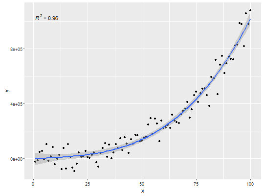

stat_poly_eq(mapping = NULL, data = NULL, geom = "text", formula = NULL, eq.with.lhs = "italic(y)~`=`~", eq.x.rhs = NULL, label.x.npc = "left", label.y.npc = "top", label.x = NULL, label.y = NULL, output.type = "expression", position = "identity", na.rm = FALSE, show.legend = FALSE, inherit.aes = TRUE, ...)
aes or aes_string. Only needs
to be set at the layer level if you are overriding the plot defaults.character the string is pasted to the front
of the equation label before parsing or a logical (see note).character this string will be used as replacement
for "x" in the model equation when generating the label before
parsing it.numeric with range 0..1 or character.
Coordinates to be used for positioning the output, expresed in "normalized
parent coordinates" or character string. If too short they will be recycled.numeric Coordinates (in data units) to be used
for absolute positioning of the output. If too short they will be recycled.NA, the default, includes if any aesthetics are mapped. FALSE
never includes, and TRUE always includes.FALSE, overrides the default aesthetics, rather
than combining with them. This is most useful for helper functions that
define both data and aesthetics and shouldn't inherit behaviour from the
default plot specification, e.g. borders.layer. This
can include aesthetics whose values you want to set, not map. See
layer for more details.stat_poly_eq fits a polynomial and generates several labela with
an equation and/or coefficient of determination (R^2) and other estimates.
This stat can be used to automatically annotate a plot with R^2,
adjusted R^2 or the fitted model equation. It supports only linear models
fitted with function lm(). The R^2 and adjusted R^2 annotations can be
used with any linear model formula. The fitted equation label is correclty
generated for polynomials or quasi-polynomials through the origin. Model
formulas can use poly() or be defined algebraically with terms of
powers of increasing magnitude with no missing intermediate terms, except
possibly for the intercept indicated by "- 1" or "-1" in the formula. The
validity of the formula is not checked in the current implementation,
and for this reason the default aesthetics sets R^2 as label for the
annotation. This stat only generates the label, the predicted values need
to be sepearately added to the plot, so to make sure that the same model
formula is used in all steps it is best to save the formula as an object
and supply this object as argument to the different statistics.
For backward compatibility a logical is accepted as argument for
eq.with.lhs, giving the same output than the current default
character value. By default "x" is retained as independent variable as
this is the name of the aesthetic. However, it can be substituted by
providing a suitable replacement character string through eq.x.rhs.
library(ggplot2) # generate artificial data set.seed(4321) x <- 1:100 y <- (x + x^2 + x^3) + rnorm(length(x), mean = 0, sd = mean(x^3) / 4) my.data <- data.frame(x, y, group = c("A", "B"), y2 = y * c(0.5,2)) # give a name to a formula formula <- y ~ poly(x, 3, raw = TRUE) # plot ggplot(my.data, aes(x, y)) + geom_point() + geom_smooth(method = "lm", formula = formula) + stat_poly_eq(formula = formula, parse = TRUE)